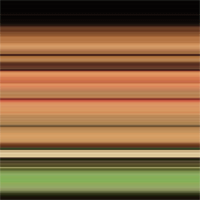

Funny sometimes how little off-comments stick with you. At an art exhibition opening, the presenter, Dodda Maggý was explaining several of her works. One video, Iris (02006) was shot after shot of about a 2 second clip of jumping on a couch, over and over and over same little action. Then repeated jumping off the couch. Not the highest production value, nor art piece, but one tiny throw-away comment she made stuck with me. She mentioned that this was an attempt at a “vertical attack” on a moment in time. It is a really interesting concept, because most of the time when we are watching movies, films and TV shows they have some sort of narrative arc. You spend your time moving from Point A to Point B in the story. This vertical slice was just that, a tiny slice of time. There is no narrative arc, you are not moving from any two points. You are just sitting on a single event and examining it deeper. I thought this was pretty interesting because, we don’t see many “vertical slices” in our daily lives and it got me thinking about when could it be useful and do we actually take the time to look at a tiny “loop of time” and fully examine it. Not just repeating it over and over, but actually dissecting it from different angles, forwards, backwards, slower, faster. Never leaving that same loop, but stopping to really think about only one thing, nothing before, nothing after.
Somewhere along the line someone gave me this little piece of advice or I read it somewhere:
The job of a CEO is to look forward and look across.
I don’t think that is their only job, nor is it only indicative of a CEO’s. We should all be looking forward to the future and how to react, but at the same time be looking across both your discipline and across industries, communities and non-related ideas. I wonder if this is a sort of “vertical slice” as we are to look across. We need to freeze a moment in time and fully examine every aspect of it. This means from different angles, from different customers’ needs, from the view of the competitors. Just like that simple video of a girl jumping off a couch over and over and over, we need to look at our industry over and over and over from different angles and aspects.
Obviously, we can’t just freeze a moment in time and fully expect to understand it. In 1814, Pierre-Simon Laplace created a thought experiment entitled Laplace’s demon. The idea behind this thought experiment is that if we knew where every atomic particle was and how it was moving, it would be possible to predict where it came from and where it is going to be, determining both the future and the past. The experiment breaks down because, we can’t actually understand every atom without altering it. Along these same lines we can’t actually understand exactly what everyone else’s thoughts or views are during this vertical slice, but we can estimate. Simply taking a single point in time and trying to “look across” all the different disciplines, customers and competitors is an interesting thought experiment. I can’t say that all vertical attacks are equal, or for how “thick” a slice, what time period do you look.
There are plenty of ways to “look forward” into the future. These range from prediction markets, trends, professional expertise, historical evidence, crowd sourcing or other various games and actions. These methodologies are fairly well established, but don’t deal with vertical attacks. They are dealing with the narrative arc. Getting your company from Point A (now) to Point B (the future), but not actually examining the “look across”. I don’t know of as many methodologies for cross-discipline comparison.
With a vertical slice, there is no past and no future, only now, what is currently happening. What if you could see every angle of the room at the same time? What would a world like that look like? We don’t know because we are too busy moving through it. What if we saw behind us at the same time we were looking forward, a sort of panorama. But that’s not all, a panorama from every position, so we can look back at ourselves from any angle as well.
We need to take a tiny “vertical attack” in time and look horizontally across. This is an image of me, I took a vertical slice 1 pixel wide and stretched it to 100% width. You can still see some features, the lips, glasses, hair, shirt, but at the same time you lose the detail. It is a different view of the same photo. Maybe it reveals something new, something we didn’t see before, then again, maybe it doesn’t.
That could be the problem with the vertical attack method, there are so many slices that tell you nothing, and very few that are useful. Finding those useful slices is difficult and therefore you “waste” more time finding something than you receive benefit.
For those of you who have or can develop the ability to look across are more valuable than those who can look forward.
Rosabeth Moss Kanter has an interesting take on vertical slices. She uses the term “kaleidoscope thinking” as the analogy. We all know a kaleidoscope, the tube you look through, usually lined with mirrors and colored glass or beads at the end. As you rotate the tube, the world at the end shifts and everything changes drastically.
All these colors of glass at the end of the kaleidoscope form a pattern, but it isn’t locked into place. By adjusting the kaleidoscope’s angle, shaking it, etc. your view and perspective changes. It is exactly the same fragments as before, but now they are reorganized into a new pattern. What this metaphor is telling us is that our view on reality is not fixed either. We know all the elements that make-up the situation, but as in the kaleidoscope it is easy to shuffle them around to make something completely new. The vertical attack works on exactly the same principle. By only looking at once slice of time you are only dealing with the elements that you know about. What happens if you were to put them into a kaleidoscope? You’d probably get an infinite number of outcomes. It is the creative among us that can see the different patterns and scenarios not as undesired outcomes, but rather creative opportunities.